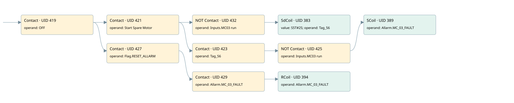

spare motor
allarms 1 · 검색 색인 순서 9 · 원본 내부 NID 추정 10
백업 PLF 원본의 3040401 바이트 위치에서 복원한 XML. 검색 문서 1789의 객체 키 161022005b62000000000000와 연결했다. 이름 해석 11/11개. 남은 RefId는 상수 또는 미해석 참조다.
연결 구조 다시 그리기
원본 Part/PCon/Wire를 이용한 연결도다. TIA 화면의 래더 배치 또는 실행 결과를 재현한 그림은 아니다. 핀 연결은 아래 표와 원본 XML을 기준으로 읽는다. 노드 위에 마우스를 두면 피연산자 이름을 볼 수 있다.

접점·코일·블록과 피연산자
| Part UID | Gate | Negated 핀 | 연결 피연산자 |
|---|---|---|---|
| 419 | Contact | operand = OFF | |
| 421 | Contact | operand = Start Spare Motor | |
| 432 | Contact | operand | operand = Inputs.MC03 run |
| 383 | SdCoil | value = S5T#2S; operand = Tag_56 | |
| 423 | Contact | operand = Tag_56 | |
| 425 | Contact | operand | operand = Inputs.MC03 run |
| 389 | SCoil | operand = Allarm.MC_03_FAULT | |
| 427 | Contact | operand = Flag.RESET_ALLARM | |
| 429 | Contact | operand = Allarm.MC_03_FAULT | |
| 394 | RCoil | operand = Allarm.MC_03_FAULT |
접점 경로를 펼친 조건식
Contact·O/A·비교기의 원본 연결을 읽기 쉽게 펼친 보조 해석이다. POWER는 전원 레일 시작을 뜻한다. 호출 블록·에지·타이머의 내부 동작과 다중 쓰기 순서는 이 표로 실행 검증하지 않았다. 미해석 핀과 RefId는 원문 연결표에서 확인한다.
| UID | 동작 | 대상 | 원본 접점 경로 | 내용 |
|---|---|---|---|---|
| 383 | SdCoil | Tag_56 | ((OFF AND Start Spare Motor) AND NOT [Inputs.MC03 run]) | 시간 동작 SdCoil; 타이머 의미 추가 확인 / 시간 인자 S5T#2S |
| 389 | SCoil | Allarm.MC_03_FAULT | (((OFF AND Start Spare Motor) AND Tag_56) AND NOT [Inputs.MC03 run]) | 조건 성립 시 Set |
| 394 | RCoil | Allarm.MC_03_FAULT | ((OFF AND Flag.RESET_ALLARM) AND Allarm.MC_03_FAULT) | 조건 성립 시 Reset |
원본 배선 연결
| Wire UID | 동일 Wire 연결 끝점 |
|---|---|
| 431 | Powerrail {} ↔ Part 419.in |
| 405 | ORef 395 (OFF) ↔ Part 419.operand |
| 420 | Part 419.out ↔ Part 421.in ↔ Part 427.in |
| 406 | ORef 396 (Start Spare Motor) ↔ Part 421.operand |
| 422 | Part 421.out ↔ Part 432.in ↔ Part 423.in |
| 435 | ORef 433 (Inputs.MC03 run) ↔ Part 432.operand |
| 21 | Part 432.out ↔ Part 383.in |
| 407 | ORef 397 (S5T#2S) ↔ Part 383.value |
| 408 | ORef 398 (Tag_56) ↔ Part 383.operand |
| 409 | ORef 399 (Tag_56) ↔ Part 423.operand |
| 424 | Part 423.out ↔ Part 425.in |
| 410 | ORef 400 (Inputs.MC03 run) ↔ Part 425.operand |
| 426 | Part 425.out ↔ Part 389.in |
| 412 | ORef 401 (Allarm.MC_03_FAULT) ↔ Part 389.operand |
| 414 | ORef 402 (Flag.RESET_ALLARM) ↔ Part 427.operand |
| 428 | Part 427.out ↔ Part 429.in |
| 415 | ORef 403 (Allarm.MC_03_FAULT) ↔ Part 429.operand |
| 430 | Part 429.out ↔ Part 394.in |
| 417 | ORef 404 (Allarm.MC_03_FAULT) ↔ Part 394.operand |
식별자 해석 근거 11개
| ORef UID | RefId | 이름 | IdentXmlPart 파일 | 해석 방법 |
|---|---|---|---|---|
| 395 | 46 | OFF | 0658-IdentXmlPart.xml | UID/RID + search-text + NID agreement |
| 396 | 47 | Start Spare Motor | 0658-IdentXmlPart.xml | UID/RID + search-text + NID agreement |
| 433 | 272 | Inputs.MC03 run | 0657-IdentXmlPart.xml | UID/RID + search-text + NID agreement |
| 398 | 48 | Tag_56 | 0658-IdentXmlPart.xml | UID/RID + search-text + NID agreement |
| 397 | 28 | S5T#2S | 0656-IdentXmlPart.xml | literal candidate: UID/RID/NID + nearby named declarations + search-text agreement |
| 399 | 48 | Tag_56 | 0658-IdentXmlPart.xml | UID/RID + search-text + NID agreement |
| 400 | 272 | Inputs.MC03 run | 0657-IdentXmlPart.xml | UID/RID + search-text + NID agreement |
| 401 | 50 | Allarm.MC_03_FAULT | 0657-IdentXmlPart.xml | UID/RID + search-text + NID agreement |
| 402 | 13 | Flag.RESET_ALLARM | 0657-IdentXmlPart.xml | UID/RID + search-text + NID agreement |
| 403 | 50 | Allarm.MC_03_FAULT | 0657-IdentXmlPart.xml | UID/RID + search-text + NID agreement |
| 404 | 50 | Allarm.MC_03_FAULT | 0657-IdentXmlPart.xml | UID/RID + search-text + NID agreement |
검색 코드 보조 자료
참조 명칭을 찾기 위한 자료이며 실행 순서나 AND/OR 관계는 위 연결표로 확인한다.
"off" "start spare motor" "inputs"."mc03 run" "tag_56" s5t#2s "flag".reset_allarm "allarm".mc_03_fault "allarm".mc_03_fault "tag_56" "inputs"."mc03 run" "allarm".mc_03_fault